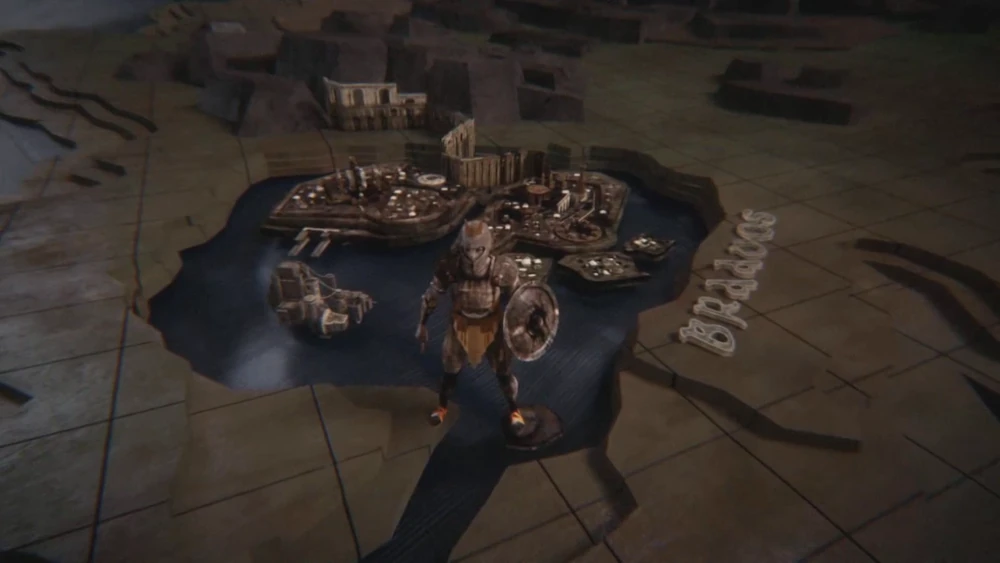

Essos est un immense continent situé à l’est de Westeros, s’étendant jusqu’à l’extrême est du Monde Connu.
Les Cités Libres sont situées sur la côte nord-ouest, la
Mer Dothrak est enfoncée profondément dans le continent et la Baie des
Serfs se trouve sur la côte sud.
Le continent s’étend loin à l’est, de la mer de Jade, aux terres lointaines et légendaires d’Asshai.
Le climat d’Essos est tempéré dans les parties nord et ouest, et subtropical dans les parties sud et est.
Les précipitations diminuent généralement à mesure qu’on se dirige vers l’est d’Essos.
L’extrémité du continent n’a pas été entièrement cartographiée.
La masse terrestre de Westeros est beaucoup plus longue du nord au sud, s’étendant des déserts de Dorne aux régions polaires au nord du Mur,
mais le trajet est-ouest est beaucoup plus court.
En revanche, la plus grande partie d’Essos longe une latitude est-ouest, tandis que ses extrémités nord et
sud sont à une distance plus courte.
Sur la rive ouest d’Essos, le point le plus au nord de Braavos se trouve à la même
latitude du Val d’Arryn, et le point le plus au sud près de Tyrosh se trouve à la même latitude que Dorne, séparé seulement par une chaine insulaire.
Pentos, situé à peu près entre ces deux extrêmes, se trouve à la même latitude que Port-Réal.
Les Cites Libres
Les neufs cités libres d'Essos sont les plus proches des Sept Couronnes.
Les marchands des cités Libres viennent souvent commercer avec les villes de Westeros tels que Port-Réal, Port-Lannis ou bien encore Villevieille.
Bien qu'elles soient toutes dérivées du haut-valyrien, chaque cités libres à son propre dialecte.
Elles ont également chacune leur propre monnaie.
Les neufs cités libres sont :
Braavos
Se trouvant à l'extrême nord-ouest d'Essos, Braavos est la plus récente et la plus puissante des neufs
cités libres.
Contrairement aux huit autres cités libres, Braavos ne fût pas fondée par des Valyriens de
hautes-naissances mais par ses esclaves.
En effet, lors d'un convoi parti pour Sothoryos, des esclaves lancèrent une sanglante rebellion.
Ils prirent les galères qui les transportèrent pour fuir et échapper à leurs anciens maîtres.
Mais ils comprirent rapidement qu'ils seraient suivis, ils changèrent donc de cap : au lieu de naviguer
au sud, ils sont allés au nord, le plus au nord possible.
Ils découvrirent l'emplacement qui deviendra plus tard Braavos.
Celui-ci était parfait car il était caché aux yeux du reste du monde : grande colline, fréquent
brouillards, couvertes de pins...
Depuis, plus aucun esclave ne demeure à Braavos.
Braaviens notables
Photo
Nom
Description
Syrio Forel
Il fut le maître à danser de la jeune Arya Stark pour qu'elle apprenne à manier Aiguille
Jaquen H'ghar
Membres des Sans-Visages
Gamine
Membre des Sans-Visages

Braavos lors du générique
Le Titan de Braavos
Le Titan de Braavos
La Banque de Fer
La Demure du Noir et du Blanc
Port du Chiffonier
Lorath
La Cité libre est nichée sur les cotés de la Mer Grelotte à l'est de Braavos et
au nord de Norvos .
Lorathi notable
Photo
Nom
Description
Shae
Prostituée et maîtresse de Tyrion
Norvos
Elle se situe dans les terres au Nord-Ouest d'Essos plus précisément au nord-est de Pentos et au sud de Lorath.
Qohor
Plus orientales que les huit autres « filles de Valyria », Qohor s'étend sur les berges de la Qhoyne, à
la lisière ouest de cette grande et obscure forêt primitive.
Les arts obscurs et mystérieux sont pratiqués à Qohor, si bien qu'elle est appelée à Westeros «La ville
des sorciers».
Il s'agirait de divination, de magie du sang ou bien encore de nécromancie bien que ces rumeurs ne
soient que rarement confirmées.
Ceci dit, il y a là-bas un véritable culte de la Chèvre Noire, qui exige régulièrement des sacrifices.
Myr, Lys et Tyrosh
Prénommées les « filles querelleuses » car ces cités sont en constantes guerres les unes contre les
autres pour les terres qui les séparent (désormais appelée les Terres Disputées), si bien qu'elles ont
maintes fois réussi à impliquer de grands seigneurs de Westeros.
Cependant, elles se rejoignent sur plusieurs points : ce sont des villes marchandes, très bien protégées
et elles ont toutes pour système de gouvernement la ploutocratie (les plus riches sont ceux qui
gouvernent).
Selon les mestres, si ces trois cités devenaient unies, elles seraient une grande menace pour les
seigneurs de Westeros.
Myriens, Lysiens & Tyroshis notables
Photo
Nom
Origine
Description
Thoros
Myr
Prêtre rouge du Maître de la Lumière & membre de la Fraternité sans Bannières
Varys
Lys
Ancien Maître des chuchoteurs, du Conseil restreint des Sept Couronnes et conseiller de
Daenerys
Daario Naharis
Tyrosh
Commandant des Puînés et Régent par intérim de la Baie des Dragons
Pentos
Cité libre la plus proche de Port-Réal, des navires circulent
chaque jour entre ces deux villes pour commercer.
Elle a été fondée par des Valyriens comme avant-poste commercial.
Les premiers Pentoshi était des fermiers, des navigateurs ou bien encore des commerçants, avec peu de
nobles parmi eux.
De ce fait, ils acceptèrent plus facilement de se mélanger aux habitants des terres conquises.
Pentoshi notable
Photo
Nom
Description
Illyrio Mopatis
Riche marchand et loyaliste Targaryen. Daenerys et son frère étaient logés chez lui
Pentos lors du générique
Le manoir d'Illyrio
Le Détroit vu du manoir d'Illyrio
Volantis
Ancienne et glorieuse, Volantis, plus communément appelée l'Antique Volantis, s'étend sur l'un des
quatre bras du delta de la Rhoyne, là où ce grand fleuve se jette dans la mer d'Eté.
Les plus vieux quartiers de la ville occupent la rive est tandis que les plus récents (à nuancer
puisqu'ils sont quand même très anciens) occupent la rive ouest.
Les deux rives sont reliées par le Long Pont.
Volantain notable
Photo
Nom
Description
Talisa Stark, née Maegyr
Epouse de Robb Stark, noble de Volantis
Extérieur de Volantis
Long pont de Volantis
Place de marché sur le pont
Place de marché où se tient un discours d'une prêtresse rouge
Chambre du bordel de Volantis
Peninsule Valyrienne
La péninsule Valyrienne se situe dans les Contrée de l'été Constant, entre la Baie
des Dragons, le golfe de Douleur et la Mer d'été.
Avant le fléau, les Valyriens avait bâti une cité comme nulle autre dans le monde
connu et la péninsule était un banc de terre uniforme.
Elle est depuis le fléau recouvert en partie par la Mer fumeuse et les ruines de Valyria.
Ancienne Valyria
Reconstitution de Valyria dans House of the Dragon
Baie des Dragons
Autrefois nommé la Baie des Serfs, est un lieu au Sud d'Essos où l'on trouve les trois principales villes
faisant
du commerce d'esclaves libérées par Daenerys Targaryen : Astapor, Yunkaï et Meereen.
Astapor
Astapor est une ville portuaire située dans la Baie des Serfs.
Elle est entourée d'une haute muraille en brique jaune.
Une harpie dorée géante est posée sur le toit d'un bâtiment et surplombe le port.
Entre ses murs, on y trouve la caserne où l'on forme les Immaculés, de nombreuses habitations et un
marché, construits avec les mêmes briques jaunes.
L'un des endroits les plus connus est La Promenade des Châtiments, lieu où l'on crucifie les esclaves
désobéissants condamnés à se dessécher au soleil.
Anciens résidents notables
Photo
Nom
Description
Missandei
Ancienne esclave, elle était la conseillère de Daenerys. En couple avec Ver Gris
Ver Gris
Commandant des Immaculés et conseiller de Daenerys. En couple avec Missandei
Astapor lors du générique
Extérieur d'Astapor
Harpie d'Astapor
Entrée d'Astapor
La promnade des châtiments d'Astapor
Port d'Astapor
Yunkai
Ville construite en pierre jaune sur une colline.
Elle est entourée d'une muraille divisée en plusieurs murs courts avec à chaque extrémité une tour.
Elle a une entrée principale et une porte arrière plus discrète.
Au sommet de la ville se trouvent deux grandes pyramides dont l'une surmontée d'une harpie, et du pied
des pyramides jusqu'à la muraille, il y a plusieurs bâtiments plus ou moins importants.
Yunkaï lors du générique
Extérieur de Yunkaï vu de loin
Extérieur de Yunkaï
Entrée de Yunkaï
Meereen
La ville est construite en pierre grise.
Elle est entourée d'une haute muraille dont l'entrée principale est située sur un pont.
Les bâtiments importants sont des pyramides plus au moins grandes en fonction de leur utilité par
exemple la plus grande pyramide est le lieu où vivait le roi puis le lieu où Daenerys Targaryen dirige la ville
avec ses conseillers.
La Grande pyramide est surmontée d'une harpie géante rappelant son alliance avec Yunkaï et Astapor.
Meereen lors du générique
Extérieur de Meereen
Intérieur de Meereen
Pyramide de Meereen
Salle du trône de Daenerys
Arène de Meereen
Mer Dothrak
Elle se situe à l'intérieur du continent, à l'est des cités libres, et est
constituée d'un vaste paysage de plaines et de steppes recouvertes d'herbes vertes relativement courtes, ce
qui lui donne l'apparence d'une mer, vue de loin.
Elle doit son nom au peuple dothraki qui y vit.
Les Dothrakis traversent ce paysage de long en large, regroupés en khalasars de plusieurs milliers
d'individus chacun, pour piller les terres avoisinantes.
Vaes Dothrak, la seule ville et le centre culturel des Dothrakis, se situe à la frontière nord-est de la Mer
Dothrak.
Vaes Dothrak est la seule ville du peuple dothraki, située dans les steppes d'Essos.
Elle est également le lieu où se rassemblent les khalasars pour commercer et décider quelle région piller
lors des prochains raids.
Il s'agit de la ville où le dosh khaleen, un conseil composé d'anciennes khaleesis, très respecté parmi les
Dothrakis, règne en maître.
En outre, Vaes Dothrak est une place sainte où il est interdit de se servir d'armes et de faire couler le
sang.
Dothraki notable
Photo
Nom
Titre
Drogo
Khal
Vaes Dothrak lors du générique
Extérieur de Vaes Dothrak
Statues de chevaux à l'entrée de Vaes Dothrak
Desert Rouge
C'est une région désertique d'Essos, localisée à plusieurs dizaines de milliers de kilomètres de Westeros.
Il est situé au sud de la Mer Dothrak, à l'est de la Baie
des Serf et au nord-ouest de Qarth.
Même les Dothrakis n'osent pas s'y aventurer, ce qui préserve la ville de Qarth de leurs attaques, ou de
toute action militaire qui pourrait viser la ville.
Il doit son nom au sable rouge qui le compose.
Désert rouge
Qarth
Qarth est une ancienne ville portuaire située sur la côte sud d'Essos.
Située sur les Portes de Jade dans un emplacement central entre la mer d'Été et la mer de Jade, Qarth est
une passerelle de commerce et de culture entre l'est et l'ouest, et le nord et le sud.
Débordant de richesses, l'architecture de la ville en fait un grand déploiement.
Elle est le foyer de démonistes et de princes marchands, et nominalement dirigée par les Impollus.
Cependant, les puissantes corporations des Treize, la Fraternité Tourmaline et la Guilde des Épiciers
tentent tous de jouer un rôle dans la gouvernance de la ville.
Elle a été désignée comme étant la Reine des Cités.
Habitants de Quarth notables
Photo
Nom
Description
Xaro Xhoan Daxos
Membre des Treize. Il complote pour prendre le pouvoir
Pyat Pree
Membre des Treize et conjurateur de Qarth. Convoite les dragons de Daenerys pour accroître son
pouvoir
Qarth lors du générique
Entrée de Qarth
Ville de Qarth
Ville de Qarth lors d'une réception
Le Conseil des Treize
Asshai
C'est une très grande ville qui se trouve au bout du monde connu des habitants
de Westeros.
Elle est située à l'extrême sud-est du continent d'Essos, sur la côte Est de la Mer de Jade.
Asshaï se trouve très loin des Cités libres, de la Mer
Dothrak et de la Baie des Dragons.
Par ailleurs, il faut plusieurs mois pour voyager de Qarth à Asshaï en bateau.
Les Asshaï'is prétendent ne pas savoir qui a bâti leur ville, ils disent seulement qu'elle est là depuis les
débuts du monde et qu'elle y restera jusqu'à sa fin.
Malgré sa taille, le nombre d'habitants ne dépasse pas celui d'un bourg de bonne taille.
Les passants des rues sont masqués, voilés et ont un air furtif.
À Asshaï, ils n'y a ni enfants, ni animaux, pour des raisons que l'on ignore.
À contrario, la magie est omniprésente et fait partie intégrante de la ville d'Asshaï à tel point que l'on
peut croiser des prêtres rouges, des alchimistes noirs, des chantelunes, des nécromanciens, des aéromants,
des pyromants, des sang-mages, des bourreaux ou bien encore des métamorphes par exemple.
Les plus sinistres habitants de cette ville sont les ensorceleurs d'ombres, dont les masques de laque
cachent le visage aux yeux des dieux et des hommes.
Asshai'i notable
Photo
Nom
Description
Mélisandre
Prêtresse de R'hllor, Maître de la Lumière. Conseille Stannis et Jon. Capable de "sorcellerie"


 : Astapor, Yunkaï et Meereen.
: Astapor, Yunkaï et Meereen.